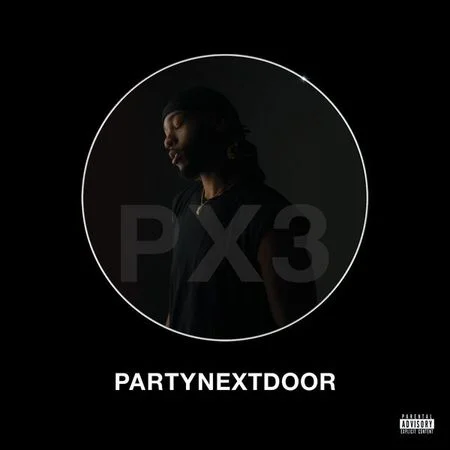
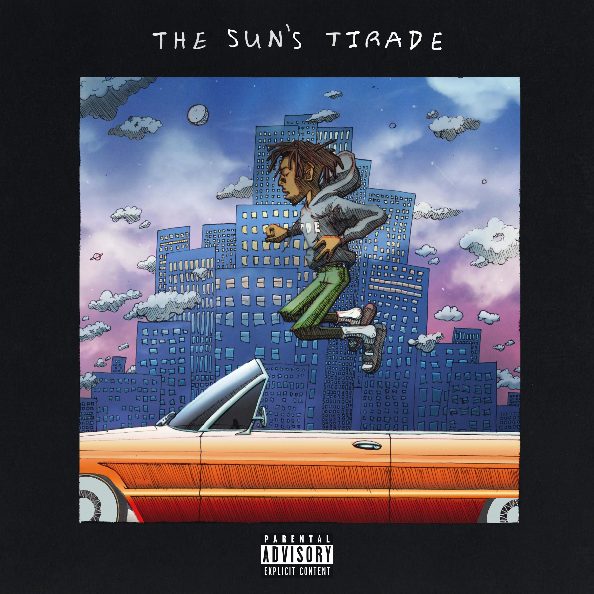
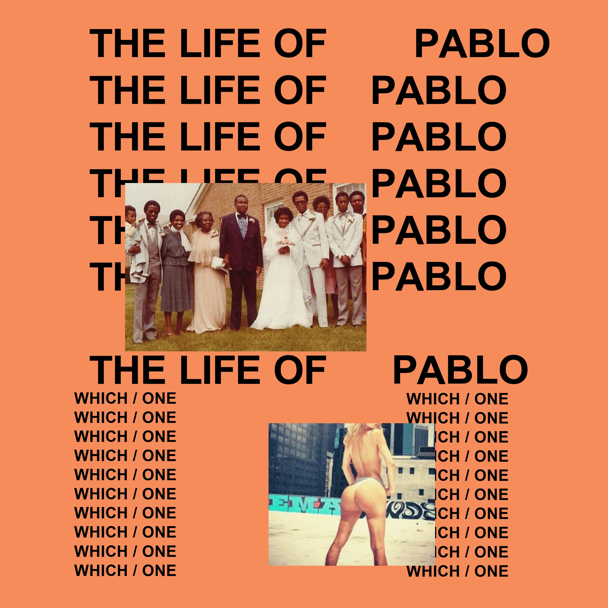
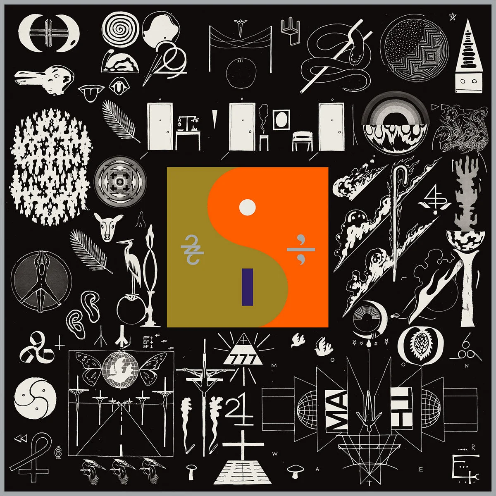
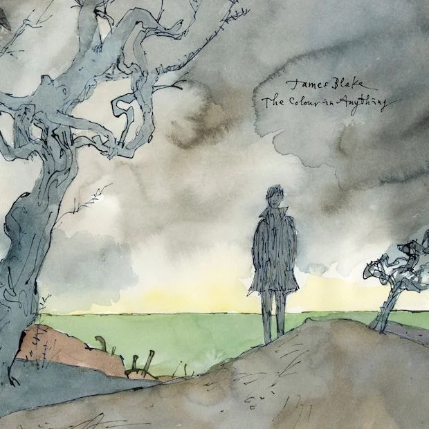
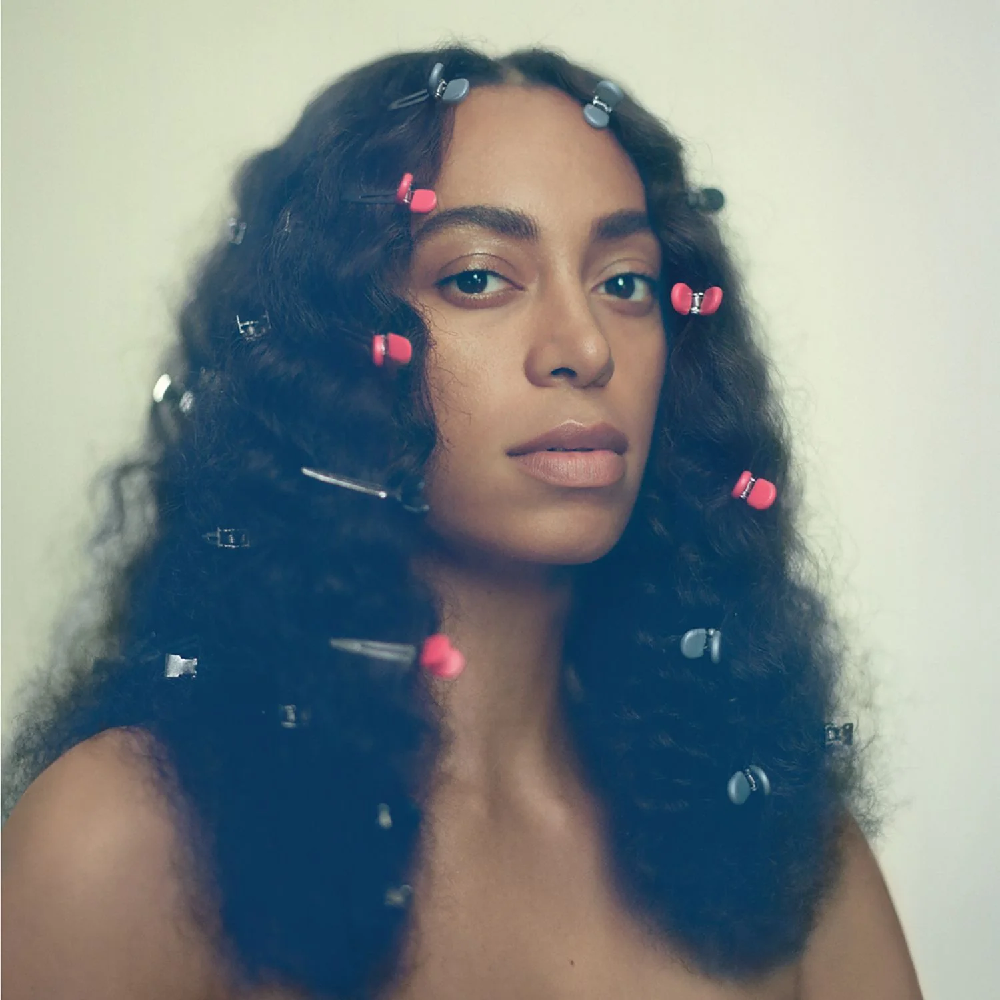
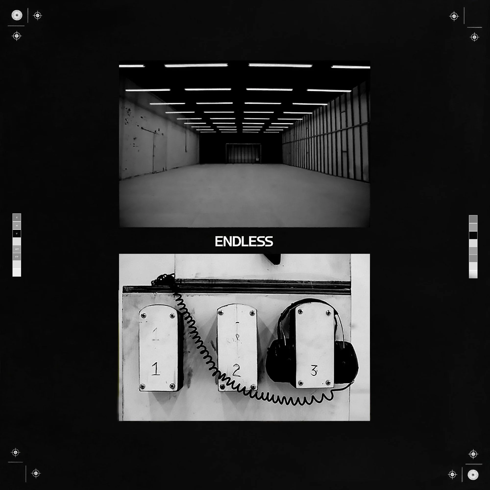
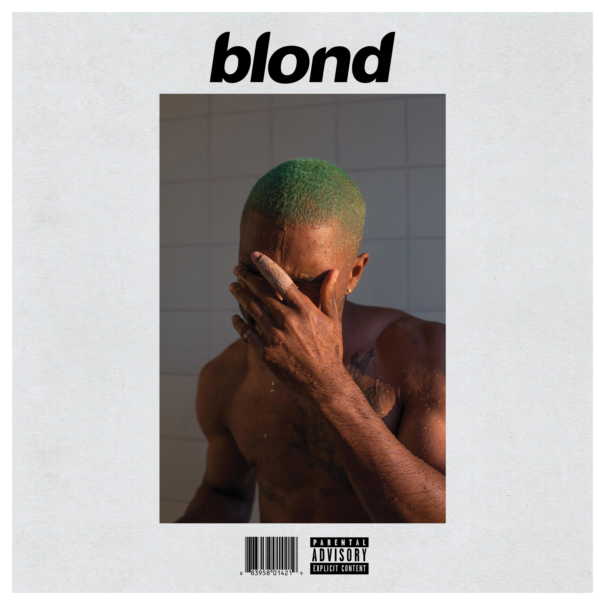

2016: O ÚLTIMO AUGE DA MÚSICA
Um top 10 dos álbuns que continuam sendo influência nesses últimos 10 anos
2016 foi um ano que eu sempre soube que iria marcar desde quando começou, mas não sabia que seria um ano que duraria pelo menos uma década. Isso se deve muito ao fato dos álbuns desse ano terem influenciado tudo que veio depois. Possivelmente, foram os últimos álbuns que realmente valem a pena nesses últimos 10 anos.
Com certeza isso transforma 2016 no último ano que tivemos tantos álbuns absurdamente bons saindo de uma vez só. Precisamos de 10 anos mesmo pra saber o valor do que eles fizeram com uma década que até então não existia, e agora temos o recorte exato pra ter noção. Eu ainda acho que 2016 entregou o que existe de melhor na música até hoje.
10. PARTYNEXTDOOR - PARTYNEXTDOOR 3 (P3)

Você já ouviu falar em trapsoul, e provavelmente sabe que é o nome do álbum do Bryson Tiller de 2015, o que não deixa de ser importante pro gênero. Mas se alguém considera trapsoul uma sonoridade de fato, ela vem do P3. Aquele beat sombrio se arrastando, casando R&B com trap de forma bem etérea pelo álbum com aquele hi-hat gostoso, sample revertido delícia... Tracks clássicas como Come and See Me e Don't Run são o puro DNA de artistas como Summer Walker, 6lack e de várias fases do próprio Drake.
9. Isaiah Rashad - The Sun's Tirade

O próprio Kendrick Lamar, que tá nesse álbum, tem que admitir que nesse aqui o Isaiah Rashad elevou o nível de jazz e bossa no rap. Aquela pegada que você já pega de J Dilla com Slum Village, de Common em Be produzida inteira pelo Kanye. Toda essa energia gostosinha de jazz rap pra relaxar tá nesse álbum. O Isaiah Rashad consegue colocar uma sequência inicial impecável de álbum clássico. Mantém aquela vibe de filme bom de rever. E não dá pra deixar de citar o single principal mesmo, porque essa música é de fato excelente: 4r Da Squaw.
8. Kanye West - The Life of Pablo

Vai ter fã de Kanye West me xingando aqui, mas devo te lembrar que ninguém melhor que eu pra falar de Kanye West e afirmo: este álbum sequer estar aqui já mostra o impacto do cara. O impacto de lançar um álbum nem tão redondinho assim, mas que ao mesmo tempo é importante e bom o suficiente pra não ficar de fora desse top 10 com todos esses monstros. Fez sentido? Enfim... Ele faz com maestria a pegada de continuar unindo estilos dentro de um álbum e deixar isso coeso, só que aqui ele passou a transformar isso com peças realmente distintas. Músicas que ele pegou da época do Yeezus, músicas recentes, músicas do projeto gospel que ele tava preparando.
E ele orquestrou isso como um espetáculo. Aquele momento histórico do desfile da Yeezy com a audição do álbum no Madison Square Garden. Aquele vídeo clássico do entusiasmo do Kanye e o Cudi mostrando Father Stretch My Hands pela primeira vez ao público. Esse álbum realmente tá longe de ser meu favorito dele, mas significou uma nova era pra uma galera. Significou a volta do Kanye West pra uma geração nova que popularizou os Yeezys, fez parte daquela turnê absurdamente insana e marcou mais uma forma de artistas construírem álbuns e fazerem shows, como todo projeto do Kanye West. Merece estar aqui.
7. Drake - Views
Se o Drake tem um álbum realmente bom, é esse aqui. Lembro como 2016 foi um ano diferente. Foi o ano que eu comecei a realmente aproveitar melhor a Ilha. E nesse período foram muitos rolês de carro com o Rafiki. Mas na época o carro dele tinha um player que só aceitava CD. Resolvi comprar de natal o Views original pra ele. Todo rolê era esse álbum direto.
Como a própria temática do disco propõe, tem música que serve pro dia, tem música que serve pra de noite. Tem muitas camadas boas nos samples. Camadas que depois foram ficando mais genéricas na carreira dele, mas que nesse álbum ainda eram muito naturais. Eu sou o primeiro a falar mal do Drake, mas esse álbum aqui é bom. Mesmo.
6. Bon Iver - 22, A Million

Depois de contribuir na sonoridade de 2 álbuns do Kanye West, o Justin Vernon decidiu criar o álbum experimental, porém muito bem feito do Bon Iver... como se Bon Iver já não fosse assim o suficiente. É clara a influência do som distorcido e glitch do Yeezus na estrutura desse álbum e isso é maravilhoso. É basicamente o Bon Iver transformando folk — algo completamente voltado ao som acústico — em elementos distorcidos, eletrônicos, samples. Algo digno de quem é extremamente talentoso musicalmente e passou um tempo com o Kanye pra deixar tudo em outro nível.
Gosto muito de várias músicas desse álbum e principalmente de como elas são construídas. Cada música tem algum elemento de destaque que ele usa de forma bem específica. 33 "GOD" é uma track muito bem construída e representa bem a capacidade do Justin. 715 - CR∑∑KS tem aquela pegada clássica de auto-tune só que o instrumento é a própria voz dele que ele controla as notas pelo sintetizador. Sem contar a influência evidente de outro amigo dele que é o responsável pelo próximo álbum da lista.
5. James Blake - The Colour in Anything

Tecnicamente não seria o melhor álbum do James Blake, mas é o meu favorito por como ele tem noção do que é capaz de fazer e usa isso da melhor forma. Parece que ele cansou de ser esse grande bagunçador da matrix musical e tá tentando ser mais normal. Mas aqui foi o auge dele nisso. Tem tracks incríveis como Timeless, Points, Radio Silence. O álbum inteiro carrega bem a vibe James Blake, no limite pra não parecer que ele tá imitando a si mesmo no lugar de realmente criar.
Talvez seja por isso que é o auge e por isso ele não fez mais esse som. Artistas como Sevdaliza, Billie Eilish e outros dessa mesma lista são influenciados (inclusive eu) por essa sonoridade que só o James Blake fez tão bem. E aqui ele bateu o auge disso em um álbum com uma quantidade considerável de tracks pra aproveitar essa primeira grande fase dele.
4. Solange - A Seat at the Table

Agora a coisa tá começando a ficar muito pesada. Esse álbum é excelente. Tão excelente que na época a Pitchfork colocou acima do meu primeiro colocado. Eu só não acho que ele tenha o mesmo peso que os seguintes por gosto meu, mas é simplesmente impecável o que a Solange faz no instrumental, no conceito, na sonoridade e no design inteiro desse álbum.
O mundo sempre vai amar mais a Beyoncé e tá tudo bem, grande artista também. Mas acho a Solange gênia, e nesse álbum ela trouxe muito fundamento musical, muita qualidade na gravação e muita qualidade na identidade tanto na sonoridade quanto na narrativa entre as faixas. Nunca é uma hora ruim pra apreciar esse álbum aqui.
3. Frank Ocean - Endless

"Ah, mas 2 álbuns do Frank Ocean na lista?" Meu amigo, esses 2 álbuns foram um acontecimento! 2 dias antes do evidente primeiro colocado, o cara lançou isso aqui em formato de filme. E é um daqueles álbuns gostosos que te pegam de rasteira total. Primeiro você acha muito estranho, quando percebe não consegue mais parar de ouvir e tudo começa a fazer muito sentido.
A imperfeição desse álbum é perfeita. Pra você ver como esse ano foi foda, 3 álbuns que mexeram tanto com essa transição de perfeição com imperfeição: Endless, 22 A Million, e The Colour in Anything. E no Endless, pra mim, acaba sendo o mais marcante porque o Frank Ocean conseguiu mesmo unir essa influência de Kid A e Yeezus para a versão "monge sábio" dele. Sim, às vezes eu enxergo a música do Frank Ocean como a de um monge de uma montanha que você vai pra ouvir essas músicas, meditar e ter respostas ou mais perguntas pra sua vida. E cara, de fato acaba sendo isso com várias tracks. U-N-I-T-Y extrai muito essa vibe que tá em toda a carreira do Frank Ocean de uma das minhas formas favoritas. Esse álbum é uma viagem que eu acompanhei bem durante esses 10 anos, não podia deixar de estar aqui em cima.
2. BK' - Castelos & Ruínas
Fale qualquer álbum nacional mais relevante que esse nos últimos 20 anos ou mais e falhe miseravelmente. Pensa aí, vou deixar tu pensar... vai... conseguiu? Pois é né, tá aí o tamanho do impacto disso aqui.
Como o próprio BK já disse: ele pode passar a carreira toda só cantando esse álbum e tá tudo bem, tá feito como todo outro artista das antigas que faz isso. Podem ter álbuns excelentes e realmente tem, mas não consigo imaginar nenhum álbum de rap ou não que tenha o mesmo peso e representou tanto quanto o Castelos & Ruínas não só nos últimos 10 anos. Como bom fã de Jay-Z, BK conseguiu construir uma história coesa entre ser fiel às origens cariocas e querer a vida boa que os artistas internacionais têm.
O Bloco 7 nessa época teve noção da importância da cena respirando e existindo no RJ e no Brasil, podendo ser sexy ao público do mesmo jeito que a gente sempre teve que apenas ver nos clipes americanos e não viver. Porque o Brasil sempre esteve nessa visão de terceiro mundo e de que o rap aqui só serve pra reclamar. O BK veio pra mostrar que ele quer é botar o pé na porta do sistema e tomar o lugar dele, e isso revolucionou toda uma geração que acordou pra viver o rap no Brasil.
Menção Honrosa: [Espaço para o texto do álbum]
1. Frank Ocean - Blonde

Esse aqui é absurdo, não tem jeito. Eu já sabia que esse álbum ia marcar uma geração inteira no momento que saiu. A sonoridade avant-garde, essa vibe dream-like que ele trouxe nas tracks, essa capacidade de falar de sentimentos que as pessoas escolhem não falar mas todos sabemos que sentimos.
Formas de lidar com relacionamentos atuais, passados, confusos, formas de entender as mudanças que o mundo estava começando a passar naquele momento, formas que a sociedade tava tentando se entender e se perdendo. Tudo isso vem forte nesse álbum da melhor forma possível. Frank Ocean resolveu elevar o nível das suas composições e realmente fez uma obra que já nasceu clássica e continua sendo o melhor álbum lançado desde então. Meio difícil bater o que esse álbum conseguiu fazer dentro do que se propõe e no que influenciou não só no som, mas até no design e assuntos abordados. Alguns assuntos que parecem normais hoje, ele abordou de forma diferente nesse álbum enquanto abria sobre o que aprendeu da vida.
Menções Honrosas
Beyoncé — Lemonade · David Bowie — Blackstar · Radiohead — A Moon Shaped Pool · Danny Brown — Atrocity Exhibition